Objetivos
- Conocer los diferentes métodos para posicionar elementos HTML en la página web.
- Conocer algunas propiedades CSS3.
Introducción y contextualización práctica
En temas anteriores hemos detallado la sintaxis CSS. También hemos visto los diferentes selectores y las propiedades más importantes que se pueden utilizar en las reglas CSS.
En este tema trataremos el último bloque de propiedades relacionado con la manera en la que podemos ubicar los párrafos, las imágenes o las tablas, pero sin seguir la colocación por defecto que tienen estos elementos.
Las propiedades CSS3 complementan las propiedades básicas de versiones anteriores y dotan, asimismo, de una mayor versatilidad a las páginas web.
Alberto está muy preocupado por la situación del COVID-19 y quiere incluir un banner con información sobre el uso de la mascarilla en la web de la empresa WebMalagaDesign.
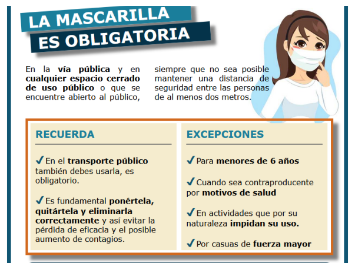
Disposición de los elementos
Uno de los aspectos fundamentales de CSS es la colocación de los elementos HTML en la página. Como hemos visto en temas anteriores, los elementos se pueden dividir en elementos en línea y elementos en bloque.
Por defecto, los elementos en línea aparecerán de izquierda a derecha, mientras que los elementos en bloque se visualizarán de arriba abajo.
La propiedad position nos permitirá cambiar la posición de los elementos HTML a lo largo de la página. Los valores que puede tener esta propiedad son:
static: utiliza el orden por defecto.relative: se puede desplazar el elemento respecto a su posición estática original.absolute: se puede desplazar el elemento respecto a su contenedor de referencia posicionado más cercano.fixed: se comporta como un elemento posicionado respecto a la ventana; si hacemos scroll en la página, permanece fijo. Este valor es útil, por ejemplo, para fijar un menú en la parte superior.
Cuando indicamos un posicionamiento diferente al estático debemos especificar qué desplazamiento queremos aplicar. Para ello contamos con las siguientes propiedades, que pueden tener valores positivos o negativos:
| Propiedad | Significado | Valores |
|---|---|---|
top | Espacio en la parte superior del elemento. | auto o tamaño. |
bottom | Espacio en la parte inferior del elemento. | auto o tamaño. |
left | Espacio en la parte izquierda del elemento. | auto o tamaño. |
right | Espacio en la parte derecha del elemento. | auto o tamaño. |
z-index | Indica el orden en el apilamiento. | auto u orden numérico. |
Cuando tenemos varios elementos apilados, con la propiedad z-index podemos indicar en qué orden se deben mostrar. Así, dentro del mismo contexto de apilamiento, el elemento que tenga un valor mayor aparecerá por delante.
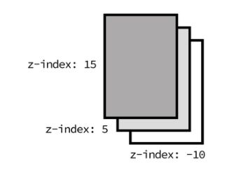
2.1. Ejemplo de disposición de los elementos
En el siguiente ejemplo se muestra la disposición de diferentes elementos mediante el uso de las propiedades que hemos visto:
<style>
* { box-sizing: border-box; }
p {
border: solid 4px blue;
width: 100px;
height: 100px;
padding: 25px;
font-weight: bold;
}
#p1 { background-color: cyan; }
#p2 {
background-color: yellow;
position: relative;
top: 10px;
left: 30px;
}
#p3 {
background-color: green;
position: absolute;
top: 200px;
left: 85px;
z-index: -3;
}
#p4 {
background-color: orange;
position: relative;
top: -45px;
}
</style>
<p id="p1">Caja 1</p>
<p id="p2">Caja 2</p>
<p id="p3">Caja 3</p>
<p id="p4">Caja 4</p>Código 1. Uso de la propiedad position.
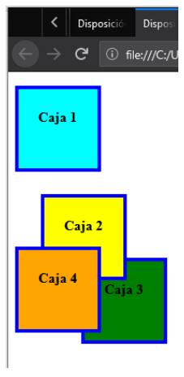
En el código 1, como al párrafo le hemos indicado un z-index de -3, aparecerá detrás de las demás cajas que se encuentren en el mismo contexto de apilamiento.
Posicionamiento flotante
Existe un tipo de posicionamiento especial que nos va a permitir sacar los elementos HTML del flujo normal y conseguir, además, que el resto de elementos que los rodean fluyan a izquierda o derecha. Para ello se utilizan las propiedades float y clear.
| Propiedad | Significado | Valores |
|---|---|---|
float | El elemento flota a la izquierda o a la derecha. | none, left, right |
clear | No permite que los elementos floten en la orientación indicada. | none, left, right, both |
En el siguiente ejemplo veremos mejor su funcionamiento:
<style>
* { box-sizing: border-box; }
p {
border: solid 4px blue;
width: 150px;
height: 50px;
padding: 10px;
font-weight: bold;
float: left;
margin: 10px;
}
#p1 { background-color: cyan; }
#p2 { background-color: yellow; }
#p3 { background-color: green; }
#p4 {
background-color: orange;
clear: both;
}
</style>
<p id="p1">Caja 1</p>
<p id="p2">Caja 2</p>
<p id="p3">Caja 3</p>
<p id="p4">Caja 4</p>Código 2. Uso de float y clear.
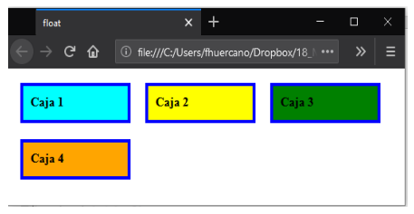
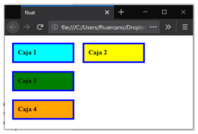
En la primera visualización, las cajas se alinean a la izquierda (float: left) hasta llegar a la caja 4, que no permite que los elementos fluyan a su alrededor (clear: both) y pasa a formar parte de otra línea. Si las cajas flotan a la derecha, se colocarán a la derecha siempre que haya espacio. Al reducir la ventana, las cajas que ya no caben pasan a otra línea.
Caso práctico 1: «Menú horizontal»
Planteamiento: Alberto está trabajando en el diseño de una web y necesita crear un menú horizontal.
Nudo: se lo comenta a Gloria y ella le dice que anteriormente ha creado menús verticales, pero no horizontales. Alberto le comenta que es muy similar y que solo debe fijarse en usar adecuadamente la propiedad float. El menú debe tener un fondo negro y, cuando pase el cursor por encima de las opciones, debe ponerse un fondo de color chocolate.
Las opciones que se deben mostrar son:
- Inicio.
- Novedades.
- Contacto.
- Acerca, alineada a la derecha.
Desenlace: el ejemplo crea los elementos del menú como una lista, los hace flotar a la izquierda y aplica float: right a la opción especial:
<style>
* { font-family: Verdana; }
ul {
list-style-type: none;
overflow: hidden;
background-color: #333;
}
li { float: left; }
.especial { float: right; }
li a {
display: block;
color: white;
text-align: center;
padding: 14px 16px;
text-decoration: none;
}
li a:hover { background-color: chocolate; }
</style>
<ul>
<li><a href="#home">Inicio</a></li>
<li><a href="#news">Novedades</a></li>
<li><a href="#contact">Contacto</a></li>
<li class="especial"><a href="#about">Acerca</a></li>
</ul>Código 3. Menú horizontal con el uso de float.
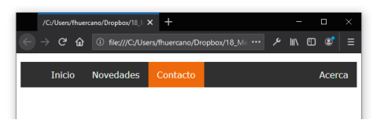
Propiedades CSS3
A lo largo de los apartados anteriores hemos detallado propiedades que, en su mayoría, pertenecen a la versión 2.1, aunque hemos descrito algunas de CSS3, como la selección de elementos por atributos o descendientes enésimos con la pseudoclase nth-child().
La versión 3 de CSS dispone de nuevas propiedades que aumentan la funcionalidad de la web sin tener que acudir a complementos externos. CSS3 se revisa continuamente y, para saber si nuestro navegador soporta las nuevas propiedades, se puede consultar la compatibilidad de las funciones concretas.
Entre las novedades principales podemos destacar:
- Colocar varias imágenes de fondo.
- Esquinas redondeadas y bordes con imágenes.
- Sombras y transparencias.
- Varias columnas en el contenido.
- Nuevos posicionamientos de cajas y nuevos selectores.
- Transformaciones, transiciones y animaciones.
5.1. Bordes redondeados
Permite crear esquinas redondeadas. Se puede aplicar a todos los bordes o indicar solo los que nos interesen. Las propiedades de cada esquina son:
border-top-left-radius: esquina superior izquierda.border-top-right-radius: esquina superior derecha.border-bottom-left-radius: esquina inferior izquierda.border-bottom-right-radius: esquina inferior derecha.
Si lo queremos aplicar a todas las esquinas por igual, podemos utilizar la versión reducida border-radius. El nivel de redondeo se indica en píxeles.
.caja {
border-radius: 20px;
}
.caja-especial {
border-top-left-radius: 30px;
border-bottom-right-radius: 30px;
}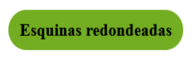
5.2. Sombras
Permite aplicar el efecto de sombra a elementos HTML, incluidos los textos. Para las cajas se utiliza box-shadow y se indican cinco valores:
- Separación horizontal de la sombra.
- Separación vertical de la sombra.
- Radio del desenfoque.
- Distancia de propagación.
- Color.
.caja {
box-shadow: 8px 8px 8px 1px gray;
}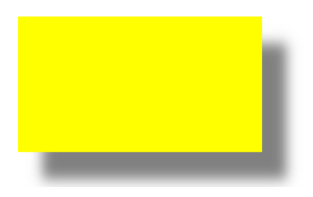
Si queremos aplicar sombras a los textos hay que usar la propiedad text-shadow y, excepto el radio de desenfoque, se indican los mismos valores que con box-shadow.
h1 { text-shadow: 3px 3px 3px chocolate; }5.3. Opacidad
Gracias a la propiedad opacity podemos indicar el grado de opacidad de los elementos de la página web. Esta propiedad abarca los valores desde la total transparencia (0) hasta la total opacidad (1).
.caja-transparente { opacity: 0.5; }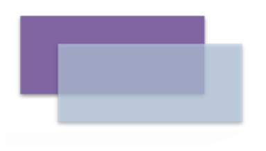
5.4. Gradientes
Permiten crear gradientes de colores. Pueden ser lineales o radiales y se indican con las funciones linear-gradient() y radial-gradient(), respectivamente.
Los parámetros principales de linear-gradient() son la dirección (por ejemplo, to right o to bottom right) y los colores inicial y final.
Los parámetros de radial-gradient() incluyen la figura (ellipse o circle), el tamaño, la posición de inicio y los colores inicial y final.
.degradado-lineal {
background: linear-gradient(to right, chocolate, white);
}
.degradado-radial {
background: radial-gradient(circle, chocolate, white);
}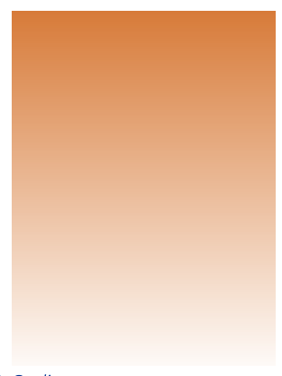
5.5. Fuentes web
Con CSS3 tenemos la posibilidad de utilizar fuentes nuevas en los documentos web. Para ello se hace uso de la regla @font-face:
@font-face {
font-family: nombre-de-la-fuente;
src: url("origen-de-la-fuente");
font-weight: normal;
font-style: normal;
}font-family: indica el nombre de la fuente que luego se usará en reglas CSS.src: URL donde se encuentra la fuente. Puede estar en local o ser una dirección web.font-weight: grosor de la fuente (por ejemplo, normal o negrita).font-style: estilo de la fuente, por ejemplo, itálica.
Las fuentes se pueden descargar de Google Fonts. Si no queremos descargar la fuente y optamos por indicar la dirección URL, debemos acceder al apartado Embed de la fuente elegida y copiar el enlace para incluirlo en el código HTML. Para aplicar esa fuente a un elemento HTML se indica con la propiedad font-family.
<!-- Fuente enlazada desde Google Fonts -->
<link href="https://fonts.googleapis.com/css2?family=Righteous&display=swap"
rel="stylesheet">
/* Alternativa: fuente descargada localmente */
@font-face {
font-family: mifuente;
src: url("Righteous-Regular.ttf");
}
h1 {
text-shadow: 3px 3px 3px chocolate;
font-family: "mifuente";
}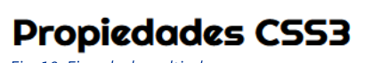
5.6. Multicolumnas
En CSS3 podemos crear columnas con el texto que tengamos en un párrafo o en un div. Para ello disponemos de las siguientes propiedades:
column-count: indica el número de columnas.column-gap: indica el hueco entre columnas.column-rule: indica el ancho, el estilo y el color de la línea que separa las columnas.
.texto-columnas {
column-count: 2;
column-gap: 24px;
column-rule: 1px solid #999;
}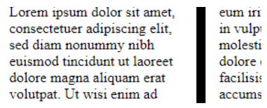
5.7. Transformaciones, transiciones y animaciones
Con CSS3 podemos crear transformaciones en los elementos HTML mediante la propiedad transform. Algunos de sus valores más importantes son:
translate(x, y): mueve el elemento x píxeles a la derecha e y píxeles hacia abajo. Si los valores son negativos, el movimiento será a la izquierda y hacia arriba, respectivamente.rotate(x): rota el elemento x grados. Por ejemplo,rotate(20deg).scale(x, y): escala x veces el ancho e y veces el alto.
.caja-movida { transform: translate(20px, 10px); }
.caja-girada { transform: rotate(20deg); }
.caja-escalada { transform: scale(1.2, 1.2); }También se pueden crear efectos de movimiento mediante transiciones y animaciones. Se pueden consultar sus propiedades y ejemplos en los recursos de referencia.
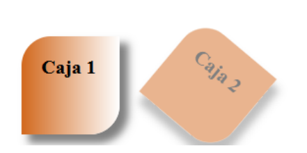
5.8. Ejemplo de propiedades CSS3
En el siguiente ejemplo el fondo es una imagen de agua que se repite. Es muy habitual usar patrones y repetirlos para conseguir llenar el fondo. El título tiene sombra y una fuente web, y las cajas tienen degradado, esquinas redondeadas y sombra.
@font-face {
font-family: mifuente;
src: url("Righteous-Regular.ttf");
}
* { box-sizing: border-box; }
body { background: url("agua.jpg") repeat; }
h1 {
text-shadow: 3px 3px 3px chocolate;
font-family: "mifuente";
}
#p1 {
background: linear-gradient(to right, chocolate, white);
width: 100px;
height: 100px;
padding: 20px;
border-top-left-radius: 30px;
border-bottom-right-radius: 30px;
font-size: 20px;
font-weight: bold;
box-shadow: 8px 8px 8px 1px gray;
float: left;
margin: 20px;
}Código 6. Fragmento del código asociado al ejemplo.
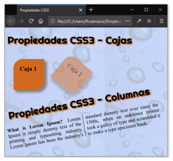
Caso práctico 2: «Viajes más frecuentes»
Planteamiento: a la empresa de Alberto y Gloria le llegan muy a menudo peticiones de diseños web con características similares.
Nudo: Alberto plantea crear una plantilla que sirva de punto de partida para realizar los diseños pedidos. Esta plantilla debe tener la siguiente estructura:
- Estructura HTML5 con todas las secciones incluidas.
- Un título con sombra.
- Un menú horizontal con efecto
hover. - Sección central con dos artículos y con sombra.
- Cada artículo debe llevar una imagen alineada a la izquierda en el primer artículo y a la derecha en el segundo. Se ha de utilizar la propiedad
float. - Sección lateral con enlaces de interés y sombra.
footerindicando el autor.
Desenlace: puedes ver cómo se visualizaría la solución en el navegador en la siguiente figura. El código que la implementa está en el anexo del tema.
Solución: anexo del tema.
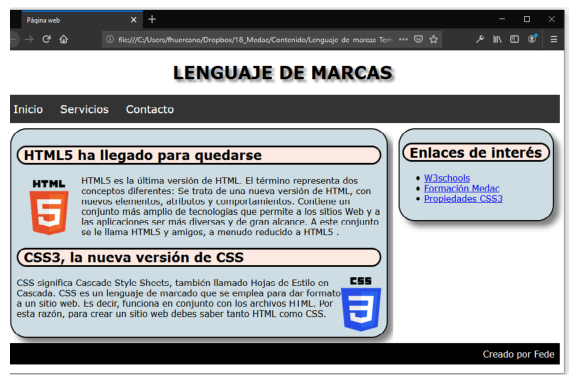
Resumen y resolución del caso práctico de la unidad
En este tema hemos estudiado las posibilidades que ofrece CSS para poder sacar del flujo normal los elementos HTML de nuestra página web. Esos elementos pueden tener una posición fija, relativa y también pueden flotar con respecto a otras cajas.
Las propiedades CSS3 que hemos explicado en el tema son algunas de las que existen en esta versión y permiten ampliar las propiedades de versiones anteriores. Entre las últimas novedades cabe destacar las transformaciones, las transiciones y las animaciones.
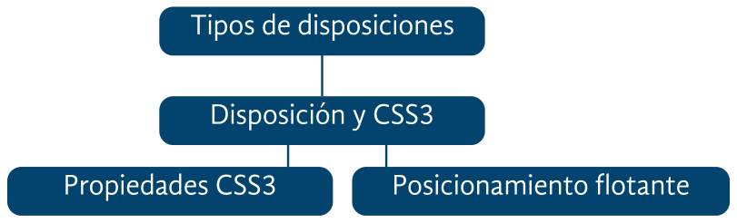
Resolución del caso práctico de la unidad
A continuación, se muestra el resultado del banner diseñado por Alberto y Gloria sobre el uso de la mascarilla.
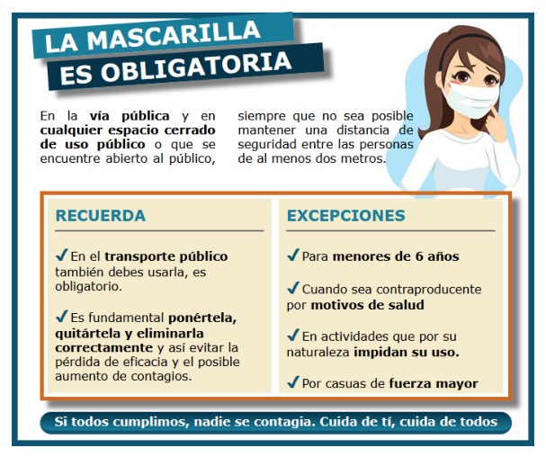
Solución: el código completo se encuentra en el anexo del tema.